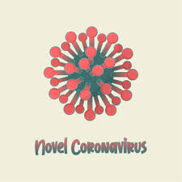

COVID-19

A COVID-19 é uma doença causada pelo coronavírus SARS-CoV-2, que apresenta um quadro clínico que varia de infecções assintomáticas a quadros respiratórios graves. De acordo com a Organização Mundial de Saúde (OMS), a maioria dos pacientes com COVID-19 (cerca de 80%) podem ser assintomáticos e cerca de 20% dos casos podem requerer atendimento hospitalar por apresentarem dificuldade respiratória e desses casos aproximadamente 5% podem necessitar de suporte para o tratamento de insuficiência respiratória (suporte ventilatório).
Quais são os sintomas
Os sintomas da COVID-19 podem variar de um simples resfriado até uma pneumonia severa. Sendo os sintomas mais comuns:
- tosse
- febre
- coriza
- dor de garganta
- dificuldade para respirar
Como é transmitido
A transmissão acontece de uma pessoa doente para outra ou por contato próximo por meio de
- Toque do aperto de mão;
- Gotículas de saliva;
- Espirro;
- Tosse;
- Catarro;
- Objetos ou superfícies contaminadas, como celulares, mesas, maçanetas, brinquedos, teclados de computador etc.
Como se proteger
As recomendações de prevenção à COVID-19 são as seguintes:
- Lave com frequência as mãos até a altura dos punhos, com água e sabão, ou então higienize com álcool em gel 70%.
- Ao tossir ou espirrar, cubra nariz e boca com lenço ou com o braço, e não com as mãos.
- Evite tocar olhos, nariz e boca com as mãos não lavadas.
- Ao tocar, lave sempre as mãos como já indicado.
- Mantenha uma distância mínima de cerca de 2 metros de qualquer pessoa tossindo ou espirrando.
- Evite abraços, beijos e apertos de mãos. Adote um comportamento amigável sem contato físico, mas sempre com um sorriso no rosto.
- Higienize com frequência o celular e os brinquedos das crianças.
- Não compartilhe objetos de uso pessoal, como talheres, toalhas, pratos e copos.
- Mantenha os ambientes limpos e bem ventilados.
- Evite circulação desnecessária nas ruas, estádios, teatros, shoppings, shows, cinemas e igrejas. Se puder, fique em casa.
- Se estiver doente, evite contato físico com outras pessoas, principalmente idosos e doentes crônicos, e fique em casa até melhorar.
- Durma bem e tenha uma alimentação saudável.
- Utilize máscaras caseiras ou artesanais feitas de tecido em situações de saída de sua residência.